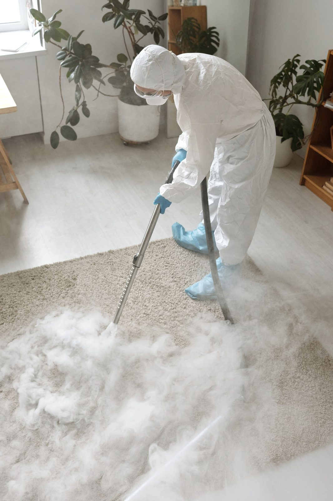

How Long Can Carpet Stay Wet Before Mold Grows?
Mold can start growing in wet carpet and pad within 24 to 48 hours. In humid Plano homes, fast extraction and drying of the carpet and slab is the best way to prevent it.
Can It Be Saved?Can My Wet Carpet Be Saved?
| Situation | Carpet | Pad | Action |
|---|---|---|---|
| Clean water (Category 1), extracted within 24 hours | ✅ Save | ✅ Often save with weighted extraction | Professional extraction + drying |
| Clean water, sitting 24-48 hours | ✅ Save | ⚠️ May need replacement | Extract, assess pad, dry or replace pad |
| Clean water, sitting 48+ hours | ⚠️ Assess | ❌ Replace | Extract, replace pad, dry carpet, monitor for mold |
| Gray water (Category 2) | ✅ Save with cleaning | ❌ Replace | Extract, remove pad, clean carpet, antimicrobial, new pad |
| Sewage / flood water (Category 3) | ❌ Replace | ❌ Replace | Full removal, sanitize subfloor, new carpet and pad. See sewage cleanup. |
The key variable is time. A carpet soaked with clean water for 8 hours can be fully saved, carpet and pad. The same carpet after 72 hours needs pad replacement at minimum and may need full carpet replacement. Call (214) 833-4785 the moment you discover wet carpet.
Extraction MethodHow Professional Carpet Extraction Works
Truck-Mounted Extraction
Our truck-mounted extractors connect heated vacuum lines from the truck to your home. The heated vacuum pulls water from carpet fibers and pad simultaneously at hundreds of gallons per hour, 50 to 100 times faster than a rental carpet cleaner or shop vac.
Weighted Extraction
Weighted extraction tools are flat metal heads that press down on the carpet, compressing the pad and forcing trapped water upward into the vacuum. A single pass with a weighted extractor can remove more water from carpet pad than 20 passes with a standard wand. On clean-water losses caught early, weighted extraction can save carpet pad that would otherwise need replacement, saving $2 to $4 per square foot in materials and labor.

Why the Pad Usually Comes Out
Carpet pad is basically foam built to hold air, and it holds water just as well. On a concrete slab, which most Plano homes have, a wet pad traps water against the concrete where it can't evaporate.
When we pull back the wet carpet, remove the padding and dry the slab, a few things happen:
- The slab can dry instead of staying wet under the pad
- We can sanitize the slab and tack strip
- Odor sources are removed
- The carpet itself dries faster
New pad goes in once the slab is dry, and the carpet is reinstalled, re-stretched and seamed.
Carpet Float and Air Mover Drying
After extraction, carpet is floated, lifted slightly off the pad with small blocks, and air movers direct airflow between the carpet and pad to accelerate evaporation of remaining moisture. LGR dehumidifiers capture that moisture from the air.
Wet Carpet Smell and Mildew
If your soaked carpet smells like mildew after a leak, moisture is still trapped below. The smell comes from bacteria and mold growing in the wet pad and backing. Surface deodorizers won't fix it.
Our process:
- Extract remaining water
- Remove wet pad
- Treat the slab and carpet backing with an antimicrobial
- Dry carpet and subfloor with dehumidifiers and air movers
- Apply odor treatment once everything is dry
Preventing Browning and Delamination
Wet carpet can develop brown stains as it dries, called browning, as minerals and fibers in the backing wick to the surface. Carpet left wet too long can also delaminate, meaning the backing separates from the fibers. Fast extraction and controlled drying help prevent both, and anti-browning treatment can be applied when needed.
Detail WorkTack Strip Inspection
Tack strips along the walls hold your carpet in place. When they get wet, they can rust or rot. We check them during drying and replace any that are damaged before reinstalling.
Every RoomCarpet in Bedrooms, Living Rooms and Stairs
Emergency water suction for a drenched bedroom carpet is one of the most common jobs we do. Stairs, closets and carpet next to bathrooms and laundry rooms all get the same attention, since water travels under walls and doorways.